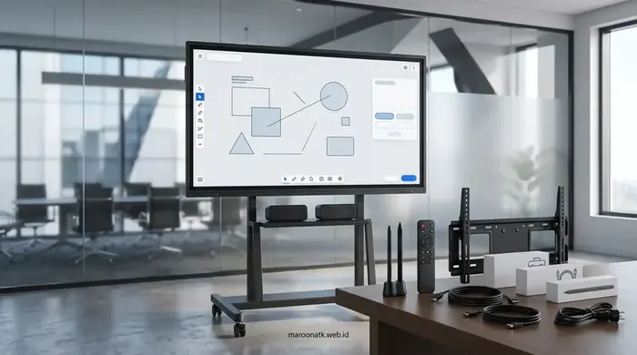

Kriteria Utama Memilih Vendor Interactive Flat Panel Indonesia Bergaransi Resmi
Vendor Interactive Flat Panel Indonesia yang kredibel adalah penyedia teknologi interaktif berbadan hukum resmi (PT) yang menjamin keaslian unit smart board, memiliki garansi resmi distributor 1–3 tahun, menyediakan ketersediaan suku cadang (sparepart) original, menerbitkan dokumen pengadaan lengkap (SPH, e-Faktur PPN 11%, BAST), serta memiliki teknisi bersertifikat untuk instalasi dan pendampingan purna jual (after-sales service).
Transformasi digital pada institusi pendidikan (Smart Classroom di sekolah dan universitas) serta modernisasi ruang rapat korporat di Indonesia mendorong lonjakan kebutuhan perangkat layar sentuh interaktif. Perangkat Interactive Flat Panel (IFP) atau papan tulis digital kini telah menggantikan proyektor konvensional dan whiteboard manual karena mampu menggabungkan fungsi display 4K, video conference, papan tulis anotasi digital, dan kolaborasi nirkabel dalam satu sistem terintegrasi.
Namun, karena nilai investasi perangkat interaktif tergolong aset belanja modal (CapEx) bernilai puluhan hingga ratusan juta rupiah, proses penentuan vendor interactive flat panel tidak boleh hanya didasarkan pada penawaran harga termurah di toko daring. Tim Procurement, Pejabat Pembuat Komitmen (PPK), dan General Affair wajib memverifikasi rekam jejak legalitas dan komitmen purna jual vendor penyedia.

Pengadaan Interactive Flat Panel Sekolah: Transformasi Smart Classroom
Strategi implementasi papan tulis digital untuk modernisasi kurikulum interaktif di sekolah dan kampus Indonesia.
Perbedaan Vendor Resmi, Distributor, Reseller, dan Toko Marketplace
Dalam ekosistem pengadaan teknologi display di Indonesia, pembeli akan menemukan berbagai saluran penjualan dengan tingkat akuntabilitas yang sangat berbeda:
- Vendor B2B Berizin Resmi (Contoh: Maroon ATK): Perusahaan berbadan hukum resmi (PT/CV) yang menjalin kerja sama langsung dengan distributor prinsipal. Memiliki izin usaha lengkap, kantor operasional riil, menerbitkan e-Faktur PPN, melayani kontrak pengadaan institusi, menyediakan teknisi on-site, dan memberikan jaminan klaim garansi yang pasti.
- Distributor Tunggal / Prinsipal Brand: Pemegang lisensi merek di tingkat nasional. Umumnya tidak melayani penjualan eceran langsung ke institusi akhir, melainkan mendistribusikan unit melalui jaringan mitra vendor resmi.
- Reseller / Toko Ritel Lepas: Penjual pihak ketiga yang menjual berbagai barang campuran. Sering kali tidak memiliki teknisi instalasi khusus dan hanya melempar proses klaim kerusakan ke tempat lain tanpa pendampingan langsung.
- Penjual Marketplace Non-Resmi (Grey Market / BM): Menjual unit impor langsung tanpa sertifikasi resmi SDPPI/Postel. Risiko utama adalah ketiadaan suku cadang, firmware tidak berbahasa Indonesia/Inggris, dan ketiadaan faktur pajak resmi.

Pengadaan melalui vendor resmi menjamin keaslian unit layar 4K, sistem dual OS berlisensi, stylus pen presisi, dan bracket penopang kokoh berstandar internasional.
Legalitas Hukum & Kelengkapan Dokumen Pengadaan Korporat
Untuk memastikan proses audit internal dan eksternal (Inspektorat / BPK / Auditor Pajak) berjalan bersih tanpa temuan hukum, purchasing team wajib memverifikasi dokumen berikut dari calon vendor:
- NIB (Nomor Induk Berusaha) & Akta Notaris Kemenkumham: Bukti keabsahan entitas bisnis yang aktif dan terdaftar secara sah di Republik Indonesia.
- NPWP Perusahaan & Status PKP (Pengusaha Kena Pajak): Memastikan vendor berhak memungut dan menyetorkan Pajak Pertambahan Nilai (PPN 11%) serta menerbitkan e-Faktur yang sah.
- Surat Penawaran Harga (SPH) Resmi: Dokumen berkop surat resmi perusahaan yang memuat rincian spesifikasi teknis, masa berlaku harga, waktu pengiriman, dan ketentuan garansi.
- Surat Perjanjian Kerja Sama (Kontrak Pengadaan): Payung hukum mengikat yang mengatur hak dan kewajiban kedua belah pihak, termasuk Service Level Agreement (SLA).
- Berita Acara Serah Terima (BAST): Dokumen pengesahan bahwa unit IFP telah diuji fungsi (commissioning test) dan diterima dalam kondisi sempurna di lokasi kerja.

Mengenal Papan Tulis Digital Smart Board: Spesifikasi, Kelebihan, dan Cara Memilih
Panduan komparasi layar sentuh interaktif untuk ruang rapat korporat dan ruang kelas modern di Indonesia.
Spesifikasi Kunci Interactive Flat Panel yang Wajib Dicek
Saat mengevaluasi lembar penawaran teknis, pastikan spesifikasi IFP memenuhi standar performa modern:
- Resolusi Layar: Wajib 4K Ultra HD (3840 x 2160 piksel) dengan panel IPS/D-LED untuk sudut pandang lebar 178 derajat.
- Teknologi Sentuh (Touch Points): Minimal 20 hingga 40 titik sentuh simultan (Infrared Touch Technology) dengan latensi rendah (<8ms) dan akurasi sentuhan pena stylus 1mm.
- Kekuatan Kaca Pelindung: Kaca tempered anti-glare (AG Glass) berstandar kekerasan 7H Mohs yang tahan benturan dan tidak silau terkena lampu ruangan.
- Sistem Operasi (Dual OS): Sistem bawaan Android terbaru (Android 11/12/13/14) untuk pengoperasian cepat tanpa PC, ditambah slot OPS (Open Pluggable Specification) untuk modul Windows 11 Pro jika membutuhkan software berat.
- Konektivitas Lengkap: Port Type-C serbaguna (mendukung transfer data 4K, audio, touch control, dan pengisian daya 65W/100W PD dalam satu kabel), HDMI In/Out, USB 3.0 Touch, RJ45 LAN, dan Wi-Fi 6.
- Audio Visual Terintegrasi: Kamera 4K Auto-Framing AI, mikrofon array 8-arah (voice pickup range 8–10 meter), dan speaker stereo bawaan 2x15W / 2x20W.
Tabel Matriks Evaluasi Vendor Interactive Flat Panel
Gunakan checklist matriks evaluasi berikut untuk menguji kelayakan calon vendor sebelum pengadaan disetujui oleh manajemen:
| Kriteria Evaluasi Vendor | Hal yang Harus Diverifikasi | Risiko Jika Tidak Diverifikasi | Dokumen / Bukti yang Diperlukan | Pertimbangan Purchasing |
|---|---|---|---|---|
| Legalitas Vendor | Status badan hukum PT aktif, domisili kantor, izin KBLI perdagangan teknologi. | Transaksi fiktif, kendala audit hukum, risiko penipuan uang muka (DP). | NIB OSS, Akta Pendirian Kemenkumham, SKT Pajak. | Wajib berstatus PT resmi dengan alamat kantor dan rekening bank atas nama perusahaan. |
| Spesifikasi Produk | Kesesuaian resolusi 4K, tipe kaca tempered 7H, versi Android, dan kelengkapan OPS Windows. | Mendapatkan produk versi lawas dengan sistem lambat dan layar mudah silau. | Brosur teknis resmi (Datasheet), surat pernyataan spesifikasi teknis. | Pastikan fitur Type-C full-function dan multi-touch 20–40 titik sudah teruji. |
| Garansi Resmi | Durasi garansi (1–3 tahun), cakupan suku cadang layar sentuh dan motherboard. | Biaya perbaikan sangat mahal jika panel layar rusak dalam hitungan bulan. | Kartu Garansi Resmi / Surat Dukungan Garansi Prinsipal. | Pilih vendor yang memberikan garansi penggantian suku cadang, bukan sekadar garansi servis jasa. |
| Ketersediaan Sparepart | Stok suku cadang lokal (power board, T-Con board, modul sentuh IR, power supply). | Perangkat mati total berbulan-bulan menunggu impor suku cadang luar negeri. | Pernyataan komitmen penyediaan sparepart minimal 3–5 tahun. | Vendor wajib memiliki service center atau gudang suku cadang di kota besar Indonesia. |
| Instalasi & Setting | Pemasangan wall-mount bracket atau mobile stand roda kokoh dengan kabel rapi. | Unit jatuh roboh akibat salah pasang bracket atau instalasi listrik korsleting. | Berita Acara Instalasi dan Uji Fungsi (Commissioning Test). | Pekerjaan harus ditangani teknisi bersertifikat, termasuk setting jaringan Wi-Fi dan audio. |
| After-Sales Service | Ketersediaan tim helpdesk dan teknisi kunjungan langsung ke lokasi kantor/sekolah. | Pengguna tidak bisa mengoperasikan fitur interaktif secara maksimal. | Dokumen SLA respon teknis & sesi pelatihan user gratis. | Pastikan vendor menyediakan sesi Training of Trainers (ToT) untuk staf pengajar/IT. |
| Quotation & RAB | Transparansi harga unit, bracket, modul OPS, kabel tambahan, ongkir, dan jasa pasang. | Pembengkakan anggaran akibat munculnya biaya tak terduga di akhir proyek. | Surat Penawaran Harga (SPH) itemized resmi berkop surat. | Bandingkan rincian komponen secara apple-to-apple antar vendor rekanan. |
| Faktur Pajak | Penerbitan e-Faktur PPN 11% yang valid dan dapat dikreditkan pada SPT Masa PPN. | Sanksi denda perpajakan dan ketidaksesuaian laporan keuangan perusahaan. | e-Faktur PPN 11% yang terverifikasi di server DJP Online. | Vendor harus PKP aktif agar pembukuan audit keuangan instansi 100% aman. |
| Kontrak Pembelian | Klausul termin pembayaran, tenggat waktu serah terima, dan sanksi keterlambatan. | Keterlambatan pengiriman tanpa kompensasi hukum yang jelas. | Draft Surat Perjanjian Kontrak Pengadaan (SPK). | Gunakan termin pembayaran aman (misal DP 30%, pelunasan setelah BAST ditandatangani). |
| SLA Layanan | Komitmen waktu respon teknis (misal respon 1x24 jam untuk investigasi kendala). | Gangguan operasional ruang rapat direksi atau kegiatan belajar mengajar terbengkalai. | Dokumen Service Level Agreement tertulis. | Pilih vendor dengan komitmen respon cepat dan unit pengganti sementara (backup unit) jika diperlukan. |

Berapa Harga Videotron LED Indoor per m2 Terpasang di Jakarta?
Rincian estimasi biaya videotron LED indoor terpasang, perbandingan pitch P1.5 hingga P2.5, dan instalasi bergaransi.
Mengapa Institusi Memilih Pengadaan IFP Bersama Maroon ATK?
Sebagai mitra pengadaan sarana kerja dan teknologi perkantoran di Indonesia, Maroon ATK berfokus pada penyediaan solusi terpadu yang menyeluruh:
- Konsultasi & Perencanaan Ruangan Gratis: Tim ahli kami membantu mengukur dimensi ruangan, jarak pandang audiens, dan akustik ruang guna merekomendasikan ukuran layar (65", 75", atau 86") yang paling tepat.
- Jaminan Produk Baru & Bergaransi Resmi: Seluruh unit Interactive Flat Panel yang disuplai merupakan barang 100% baru dengan segel pabrikan dan kartu garansi resmi distributor Indonesia.
- Tim Instalasi & Teknisi Berpengalaman: Pemasangan bracket dinding tebal atau mobile standing bracket beroda dilakukan dengan standar keselamatan tinggi dan penataan kabel (cable routing) yang rapi.
- Pelatihan Penggunaan (Hands-On Training): Kami menyelenggarakan sesi demonstrasi dan pelatihan langsung bagi para guru, dosen, pemateri rapat, maupun staf IT instansi Anda hingga mahir mengoperasikan seluruh fitur papan tulis interaktif.
- Kepatuhan Administrasi Perpajakan Penuh: Didukung dokumen legalitas lengkap, Surat Penawaran Harga resmi, Purchase Order, Invoice, BAST, dan e-Faktur PPN 11% yang siap diaudit.
Pelajari lebih lanjut profil dan integritas layanan kami di halaman Tentang Maroon ATK.
Kesimpulan: Amankan Pengadaan Teknologi Interaktif Institusi Anda
Poin Penting yang Perlu Diingat
- Pengadaan Interactive Flat Panel adalah investasi jangka panjang yang membutuhkan jaminan legalitas dan purna jual yang nyata.
- Hindari membeli unit dari marketplace lepas tanpa kepastian garansi suku cadang dan ketiadaan e-Faktur PPN.
- Verifikasi spesifikasi layar sentuh 4K UHD, dual OS Android & Windows OPS, serta kelengkapan port Type-C PD.
- Gunakan matriks evaluasi 10 kriteria untuk menyaring vendor yang benar-benar berkomitmen memberikan SLA cepat.
- Maroon ATK siap mendampingi institusi Anda mulai dari tahap konsultasi spesifikasi, demo produk, instalasi rapi, hingga pelatihan teknis di seluruh Indonesia.
Jadwalkan Konsultasi & Demo Interactive Flat Panel Instansi Anda
Diskusikan kebutuhan smart classroom atau modern meeting room bersama spesialis teknologi Maroon ATK. Dapatkan katalog spesifikasi teknis dan Surat Penawaran Harga (SPH) resmi.
Pertanyaan Umum (FAQ) Seputar Vendor Interactive Flat Panel
Pengadaan melalui vendor berbadan hukum PT resmi menjamin keabsahan kontrak kerja sama, kepatuhan perpajakan (e-Faktur PPN 11% sah), keaslian unit pabrikan (bukan rekondisi), serta kepastian klaim garansi suku cadang dan teknisi on-site selama masa pakai produk.
Garansi resmi wajib mencakup perlindungan panel layar sentuh 4K, motherboard kontroler, power supply unit (PSU), modul slot-in OPS Windows/Android, serta dukungan teknisi bersertifikat untuk perbaikan hardware maupun update firmware perangkat lunak.
Ukuran 65 inci ideal untuk ruang meeting kecil hingga menengah (6–12 orang) atau ruang kelas berkapasitas 20–25 siswa. Ukuran 75 inci sangat disarankan untuk ruang rapat direksi dan kelas 30–45 siswa. Sementara ukuran 86 inci ditujukan untuk aula seminar, auditorium, dan ruang konferensi berskala besar.
Ya, tim Maroon ATK memfasilitasi sesi konsultasi teknis, demo unit presentasi, instalasi pemasangan bracket dinding/standing beroda, serta pelatihan langsung (hands-on training) bagi staf pengajar, pimpinan rapat, dan tim IT instansi Anda.

Arby Ardiansyah
Konsultan teknologi presentasi digital dan smart interactive display dengan pengalaman mendalam dalam integrasi sistem Interactive Flat Panel, Videotron LED, dan smart classroom di berbagai universitas, sekolah swasta terkemuka, kementerian, dan korporat di Indonesia.